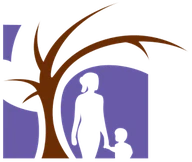

What happened
Researchers studied PROMPTS at 40 Kenyan health facilities. The platform combined health information, reminders, and a helpdesk that classified questions for automated replies or clinical review. The trial enrolled 6,139 pregnant women between November and December 2021 and followed them through August 2022. Women at facilities assigned to introduce PROMPTS had improvements of 0.06–0.09 standard deviations across five measures of knowledge, preparation, and reported care. Care-seeking for danger signs did not improve significantly. The trial evaluated the whole platform and was not powered for clinical outcomes. The natural-language processing system changed during this period: the technical paper dates the deployment of TRIM-AI to June 2022. Jacaranda Health reported cumulative reach of 3,580,095 mothers across 23 Kenyan counties and 1,500 facilities during July–September 2025. Talk Africa reported on 13 October 2026 from Bungoma County that a first-time mother found that the messages taught her about nutrition and danger signs. In the same report Victor Barasa, a doctor at Malindi Sub-County Hospital, cautioned against overreliance on automated systems and said that doctors must use their own clinical judgment. Jacaranda Health's head of programs told the reporter that some mothers have no phone or cannot read Kiswahili.
Sources
-
Peer-reviewed study, by an evaluator that the makers or users commissioned.
Original trial of the complete platform, with sample, methods, outcomes, and limitations. Methods, Tables 1–6, discussion, and S1–S2 Text.
journals.plos.org. Published article. Published article.
journals.plos.org. S1 Text, randomization. S1 Text, randomization.
journals.plos.org. S2 Text, outcomes omitted or changed from preregistration. S2 Text, outcomes omitted or changed from preregistration.
-
Peer-reviewed study, by the makers.
Original technical account of the earlier classifier, TRIM-AI, deployment date, response workflow, and estimated operating costs. Pp. 14621–26 and online appendix.
ojs.aaai.org. Published technical paper. Published technical paper.
raw.githubusercontent.com. Original online appendix. Original online appendix.
-
Report, by the organization that used it.
Jacaranda Health. PROMPTS. Program brochure, n.d.
Original provider estimate of lifetime cost per enrollee and description of the clinical helpdesk. P. 2, costs; p. 3, helpdesk and AI.
-
Report, by the organization that used it.
Jacaranda Health. Q3 Impact Report: July–September 2025.
Later cumulative enrollment and service expansion, distinct from the trial’s measured effects. Opening scale figures and Ghana expansion section.
-
News report, by authors with no tie to the system.
Bosibori, L. (2026). AI-Supported Text Service Helps Kenyan Mothers, but Information Alone Is Not Enough. Talk Africa, 13 October 2026. The reporter, on a Gender+AI Reporting Fellowship of the Africa Women's Journalism Project and DW Akademie, has no tie to Jacaranda Health; she interviewed a PROMPTS user in Bungoma County who says that the messages taught her about nutrition and danger signs, and a doctor at Malindi Sub-County Hospital who cautions against overreliance on automated systems.
The messages became my daily guide. They taught me about nutrition, danger signs, and when I needed to seek medical advice.
Details
AI system
- Model
-
An earlier Google Cloud classifier preceded TRIM-AI. The later system adapted XLM-RoBERTa-large as XLM-RoBERTa-JH. [2]
- Provider
-

Jacaranda Health. [1] - Role
-
Natural language processing classified messages for routine replies or clinical helpdesk review. [1]
- Configuration
-
The later TRIM-AI classifier adapted a multilingual model using 939,819 messages, then trained for 58 intents on 107,714 labeled messages. [2]
- Inputs and outputs
-
Women sent questions by SMS. The platform classified their intent and urgency, then provided guidance or routed the message to clinicians. [1]
- Autonomy
-
In the documented TRIM-AI workflow, sufficiently confident classifications triggered vetted replies. Failed or uncertain exchanges went to staff. [2]
- Workflow
-
Women received scheduled messages and reminders and could text the helpdesk. Clinicians handled questions that required human review. [1]
- Human oversight
-
Clinical staff prepared responses and handled escalated messages. The technical evaluation asked users whether automated answers were helpful. [2]
- Relation to AI
-
The helpdesk used natural language processing to sort incoming questions. [1]
- AI contribution
-
The trial evaluated the complete platform. It did not measure the separate effect of the NLP helpdesk. [1]
Benefits
- Beneficiaries
-
Women attending participating facilities who had access to a mobile phone. [1]
- Distribution and access
-
The trial covered public and faith-based facilities in eight counties. It excluded women without phone access. [1]
- Duration
-
The trial enrolled women in November and December 2021 and followed them through August 2022, from pregnancy into the early postpartum period. Jacaranda Health reported cumulative reach of 3,580,095 mothers in its report for July–September 2025. [1] [2] [3] [4] [5]
- Expected?
-
Better knowledge and care were the intended benefits. [1]
Measurement
- Measurement
-
Telephone surveys measured knowledge and reported care. Analysis compared assigned groups and accounted for clustering by facility. [1]
- Setting and sample
-
There were 6,139 participants at 40 facilities. Researchers completed 5,509 of 6,128 eligible postpartum interviews. [1]
- Measures
-
Knowledge, birth preparation, routine and danger-sign care, newborn care, and postpartum care content. [1]
- Results
-
Five indices improved by 0.06–0.09 standard deviations. Care-seeking for danger signs did not differ significantly. [1]
- Additional value from AI
-
The evaluation did not separate automated triage from information, reminders, or clinician support. [1]
- Limitations
-
Outcomes were self-reported. The study was not powered for clinical outcomes, and a parallel nurse-training program could have influenced care. [1]
- Denominators
-
Among treatment participants surveyed during pregnancy, 1,453 of 1,700 reported joining PROMPTS. [1]
- Materials for replication
-
The public repository contains analysis code and documentation. Participant data remain restricted under the study’s approvals. [1]
Money
- Kind of value
-
A provider estimate of enrollment cost and a separate estimate of NLP operating costs. [2] [3]
- Amount
-
Jacaranda estimated US$0.74 per enrollee over their time on PROMPTS. The technical paper reports monthly NLP costs falling from US$819 to US$632. [2] [3]
- Currency and prices
-
The sources report U.S. Dollars. The technical paper also gives about KES 24,000 for its rounded monthly saving of about US$200. [2] [3]
- Period and unit
-
Per enrollee over their time on the platform, and per month for the separate NLP estimate. [2] [3]
- Realization
-
Both figures are provider estimates. The trial did not audit them or measure a net monetary benefit. [2] [3]
- Recipients and payers
-
Jacaranda and its partners fund delivery. Participants use PROMPTS free of charge. [2] [3]
- Gross or net
-
The enrollment figure is a cost. The technical saving covers model and translation services, not the full health program. [2] [3]
- Included costs
-
The enrollment estimate covers messages, technical infrastructure, enrollment work, and county partnerships. [2] [3]
People and places
- Participants
-
Jacaranda Health ran PROMPTS with Kenyan health facilities. Academic researchers and Innovations for Poverty Action evaluated it with the provider. [1]
- Ownership and control
-
Jacaranda Health operated the platform. Participating facilities helped enroll women. [1]
- Dependencies
-
Women needed access to a phone that could receive texts. The service also needed mobile networks, facility enrollment, and clinical helpdesk staff. [1]
Follow-up
- Conditions for replication
-
Women need access to SMS, facilities must support enrollment, and clinicians must be available for escalated questions. [1]
- Replication attempts
-
The later report documents expansion, rather than a new randomized test of the Kenyan trial result. [4]
- Availability
-
Jacaranda reported continued operation in Kenya and an agreement for national expansion in Ghana during 2025. [4]
Evidence
- Original evidence
-
The trial in PLOS Medicine cites the technical paper for the natural-language processing system and Jacaranda Health's brochure for costs. The figures on later reach come from Jacaranda Health's own impact report for July–September 2025. Talk Africa reported on 13 October 2026 from its interviews with a PROMPTS user, a doctor and Jacaranda Health's head of programs. [1] [2] [3] [4] [5]
Grades
- Observed or intended
-
Observed in a randomized evaluation. [1]
Entry details
- Sector
-
Maternal and newborn health. [1]
- Purpose
-
PROMPTS provided pregnancy information, reminders, and help with questions through text messages. [1]
Not in the sources: release, return and payback, cross-border connections, related entries.
Not yet checked: reach, geopolitical implications, institutional decision, grounds, action and result, success criterion, alternative assessments, other identifiers.
Cite this record
Peter H. Vartanian. (2026). Pregnant women in Kenya learn more from a text-message health service (AIBD-0100). Artificial Intelligence Benefits Database, edition of 30 October 2026. https://petervartanian.xyz/aibd/records/AIBD-0100.html (archived at https://doi.org/10.7910/DVN/AADSII, version 2.0)